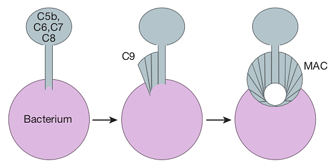

Summary: Our immune system builds attack complexes against bacteria, viruses and parasites. How they are put into place and the mechanisms used along the way might offer lessons to the cybersecurity area.
The innate immune system serves as the second line of defense (if we count the physical barriers such as the skin as the first line) for a human body. Its ability to develop effective responses against everyday invaders at a lightning-fast rate is so important. Without this ability, a single bacterium entering our tissue would reach 100 trillion in number or 100 liters in volume in only one day and become an unimaginable threat to a human body which has a blood volume of five liters. The main players of the innate system team are the complement system, professional phagocytes and natural killer cells.
The complement system has three different functions: 1) building a membrane attack complex (MAC) on the membrane of an invader to kill it, 2) tagging an invader to make it available to eater cells and 3) attract other players to the battle scene. In this blog post, we only talk about building the MAC.
The complement system builds a MAC on the membrane of multiple types of intruders: bacteria, viruses and parasites. The building process starts when a C3 protein — which is abundant in blood and tissues — is cut into two smaller proteins (which happens continually in the human body). One of these smaller proteins, C3b, is very reactive and can bind to both amino and hydroxyl groups which are commonly present on the surface of intruders (e.g., bacteria). Once a C3b binds to the surface of an intruder, another complement system protein, B, binds to the C3b to form a C3bB. Another complement protein, D, comes along to clip off a part of the B to produce a C3bBb. After having C3bBb produced, B proteins are not needed anymore to convert C3 proteins to C3b, because C3bBb proteins act like a saw and efficiently do the conversion. As a result, C3 proteins in the neighborhood are readily converted into C3b and we start to have a lot more C3b proteins binding to the surface of the intruder and therefore more C3bBb convertase formed to cut even more C3 proteins.
What we see here is a “positive feedback” loop, where the more is produced, the faster the production happens. This usually happens because the output of the production has the ability to intensify the input. In this case, the more C3bBb proteins are formed, the more C3 proteins are cut. Without C3bBb proteins, this positive feedback loop could not be created.
Once C3b protein is bound to the surface of the intruder, the cascade of bindings can proceed further. C3bBb binds to C3b and together they cut another complement system protein, C5, into two pieces. (What makes C3bBb bind to C3b instead of cutting C3 molecules? Is the intense production of C3b molecules designed to make this binding possible?) One of these pieces, C5b, comes together with other complement system proteins (C6, C7, C8) to form the stem of the MAC to anchor it to the surface. Finally, C9 proteins are added to form a channel that opens up a hole on the surface (see the figure below). Once this hole is created, the intruder is ready to be eaten.

However, human cells are safe from the complement system. An enzyme called MCP on the surface of human cells accelerates the process where C3b proteins are made inactive by other blood proteins. Another protein DAF — again on the human cells — accelerates the destruction of C3bBb proteins by other proteins in the blood. These prevent the positive feedback loop from starting in the first place. Yet another protein C59 does not allow C9 proteins to be added to the developing MAC.
The dependency of the MAC building process on many players makes it more controllable, meaning that the process can easily be stopped with a lack of a single player. In fact, this controllability allows human cells to remain safe. The defense systems we build against cyber attacks can also be made dependent on multiple conditions for the ease of control.
The positive feedback loop seems to be key to the speed. The idea of the positive feedback loop can be adopted for time-critical cyber defenses. Interestingly though, this idea seems to be applicable only when the defense is mounted over time. Today's cyber defenses are usually not like that, meaning they are usually already in place. The positive feedback loop idea seems to have potential for other areas of cybersecurity (like fuzz testing) as well.
Another interesting point is that there are multiple stages in the development of the defense. A protein can take on different responsibilities in different stages, like C3bBb acting like a saw in an earlier stage and later on binding to C3b to form another cutter.